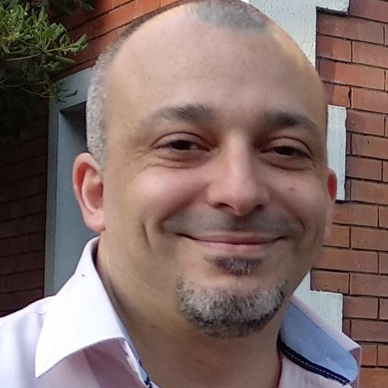

Lidero equipos de ingeniería que construyen productos digitales.
Soy Engineering Manager, con más de 20 años en tecnología para servicios financieros y seguros, y liderando equipos desde 2008. Hoy en itti, a cargo de la ingeniería de productos digitales de seguros.

Sobre mí
Lidero equipos de ingeniería que construyen productos digitales para servicios financieros y seguros. En itti trabajo en los productos que hicieron de Ueno Seguros la primera aseguradora de Paraguay en ofrecer la gestión completa online, de la venta a la posventa.
Empecé como programador y desde 2008 lidero equipos en Tarshop, OCA, BNP Paribas Cardif, Supervielle Seguros, Santander Tecnología e itti. En los dos últimos hice crecer los equipos (hasta 10 ingenieros), diseñé y promoví su división en dos squads para dar foco por vertical a los roadmaps, y acompañé el desarrollo de quienes los lideran.
No programo en el día a día: lidero a los equipos que desarrollan. Leo e interpreto código, con apoyo de IA, para diagnosticar incidencias, aportar al diseño de las soluciones y proponer mejoras de eficiencia, deuda técnica, escalabilidad y arquitectura.
Tres ideas que guían cómo lidero
Cruzo métricas de Jira y GitHub (cycle time, tiempo al primer review, throughput) para encontrar cuellos de botella, y uso un modelo de estimación de alto nivel para que producto y negocio puedan priorizar el roadmap con más certeza.
Impulsé en mi equipo el SDLC asistido por IA y Spec-Driven Development, con calidad y seguridad incorporadas desde el diseño.
Colaboro con el equipo de talento en la selección de ingenieros, acompaño el crecimiento de cada persona con objetivos claros y promuevo a quienes están listos para liderar.
Resultados recientes
Logros del equipo que lidero en itti, desde abril de 2024.
Trayectoria
Más de 20 años en IT, la mayoría en servicios financieros y seguros.
-
Engineering Manager · ittiabr. 2024 – actualidad
Lidero la ingeniería de productos digitales de seguros: hoy, un squad de 5 ingenieros senior (Flutter y backend).
- Hicimos de Ueno Seguros la primera aseguradora de Paraguay con gestión 100% online, sumando productos y fases de posventa en dos años.
- Participé junto al equipo de talento en la selección de 11 ingenieros y escalé el equipo a dos squads (venta y posventa), diseñando la división por vertical del roadmap. Acompañé la promoción de un ingeniero senior a Engineering Manager.
- Bajamos el cycle time de 11 a 4,8 días y el tiempo al primer review de 5 días a menos de 20 horas, y la completitud del sprint subió de 60% a 81% en dos meses.
- 8 de 10 iniciativas de los últimos dos trimestres se entregaron en el plazo estimado (sin contar cambios de alcance ni bloqueos externos), con un playbook de estimación por orden de magnitud para mobile, BFF y microservicios.
Ver más logros
- Impulsé el SDLC asistido por IA y Spec-Driven Development: el código generado con IA pasó de 50% a 90% en un trimestre.
- 87% de cobertura de tests en más de 20 servicios (ninguno bajo 80%) y 100% de PRs revisados por pares, con análisis de dependencias, de vulnerabilidades y OWASP Top 10 desde el diseño.
- 100% de los servicios con alertas en New Relic y telemetría enriquecida: en 2026, solo 3 incidentes de criticidad alta en más de 20 servicios.
- Animé a dos ingenieros sin experiencia en IA a sumarse a un piloto real; fueron elegidos champions de IA y presentaron ante más de 200 personas. Los acompañé con feedback y preparación.
-
Project Leader · Santander Tecnología Argentinamar. 2022 – mar. 2024
Lideré el crecimiento del equipo de desarrollo de seguros del banco hasta 10 ingenieros y diseñé y promoví su división en dos squads: uno de integración con canales, que lideré, y otro de conexiones con el core y las aseguradoras.
- Productos de seguros en React dentro de la app del banco.
- APIs internas en Java e integraciones con aseguradoras de autos para cotizar y comparar varias opciones a la vez.
- Evolución del backoffice (Java/JSP) y de la base Oracle de seguros.
-
Jefe de Sistemas · Supervielle Segurosago. 2021 – mar. 2022
Lideré los equipos de desarrollo de los sistemas core y digitales: construcción de equipo, nivelación de habilidades, seguimiento de planes de trabajo y gestión de proveedores.
-
Profesor de programación · Coderhousejul. 2021 – oct. 2021
-
Líder de Experiencia, Mentor de Desarrollo y Análisis Funcional · BNP Paribas Cardifnov. 2018 – jul. 2021
Lideré equipos de desarrollo y el mantenimiento correctivo y evolutivo de aplicaciones core y satélite, como Service Delivery Manager y Jefe de Mantenimiento y Desarrollo de Aplicaciones. Gestioné proveedores de IT y el presupuesto del área, y definí y administré los procesos del ciclo de vida de software.
-
Líder de Sistemas Administrativos · OCAnov. 2014 – oct. 2018
Soporte, mantenimiento y evolución de SAP, facturación, liquidación de haberes e intranet. Gestión de requerimientos de contabilidad, impuestos, cuentas a pagar y a cobrar, compras y control de gestión.
Proyectos implementados: venta y facturación en mostrador sobre SAP con autoimpresión de facturas, factura electrónica e impresoras fiscales integradas a SAP.
-
De Analista Programador a Jefe de Desarrollo · Tarshopsep. 2005 – oct. 2014
Nueve años en una emisora de tarjetas con más de un millón de clientes: ciclo de vida de tarjetas, terminales en comercios y sistemas de fideicomisos financieros.
- Jefe de Desarrollo (2011–2014): equipos, demanda, proveedores y proyectos sobre sistemas core y transaccionales, SAP ERP, fideicomisos, ETL, datamarts y QlikView.
- Jefe de Sistemas Administrativos y Financieros (2009–2011) y Coordinador (2008–2009): procesos contables, administrativos y de fideicomisos, interfaces y conciliaciones operativo-contables.
- Analista Programador (2005–2007): Informix/4GL, ABAP y customizing de SAP; optimización de procesos administrativos.
-
Técnico informático · Ejército Argentinojul. 2002 – sep. 2005
Soporte técnico, mantenimiento del sistema Informix/4GL y desarrollo de aplicaciones en VB6.
Budget Manager
Gestor de gastos para hogares argentinos, en producción e instalable como PWA. Lo construí como laboratorio de las prácticas que impulso en mis equipos: Spec-Driven Development con Spec Kit y Claude Code, con subagentes que revisan seguridad, backend, frontend, QA y performance antes de cada merge.
Ingeniería en Informática
Universidad Nacional de La Matanza (UNLaM), orientación en Ingeniería de Software. 2001 – 2010.
Formación técnica secundaria.
Aptitudes
Liderazgo
Proceso y datos
Criterio técnico
IA aplicada
Stacks de los equipos que lideré: Kotlin, Go, Flutter, Java, Spring WebFlux, React, AWS (SQS, SNS, DynamoDB, S3), Oracle, PostgreSQL, Redis, New Relic, microservicios y microfrontends.
Contacto
Si querés conversar sobre una posición de liderazgo en ingeniería o sobre un proyecto de consultoría, escribime.